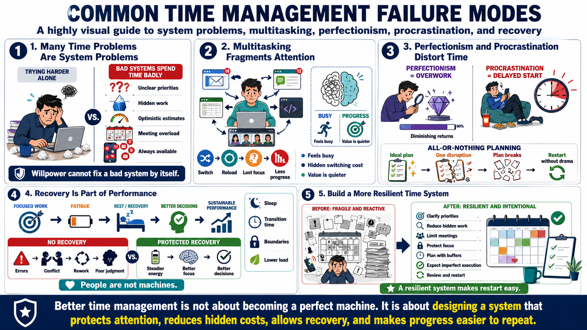

Common Time Failure Modes
Connecting to LMS... Progress: in progress

Narration
Many time problems are system problems rather than character flaws. Overcommitment often comes from unclear priorities, hidden work, optimistic estimates, and a culture that rewards saying yes. Meeting overload can grow because meetings are the default coordination mechanism. Constant availability can appear helpful while making focused execution nearly impossible. When a system spends time badly, individual willpower is not enough to repair it.
Multitasking is another common failure mode. People can switch quickly between tasks, but demanding work still pays a cost when attention fragments. A person may feel busy all day while never staying with one important problem long enough to make progress. Busyness is visible and often socially rewarded. Value is quieter. It shows up in decisions made, work completed, risks reduced, and relationships strengthened.
Perfectionism and procrastination can both distort time. Perfectionism keeps effort locked on diminishing returns when useful completion would be enough. Procrastination delays the uncomfortable start until urgency supplies pressure. All-or-nothing planning adds another trap: if the ideal plan breaks, the person abandons the whole system. A resilient time system expects imperfection and gives people a way to restart without drama.
Ignoring recovery is one of the most expensive failure modes. Sustainable performance requires attention, energy, and judgment, and those are affected by rest, transitions, boundaries, and reasonable load. This course is not giving medical advice, but it is practical to recognize that people are not machines. A system that consumes recovery may look productive briefly, then pay for it through errors, conflict, rework, and lower-quality decisions.